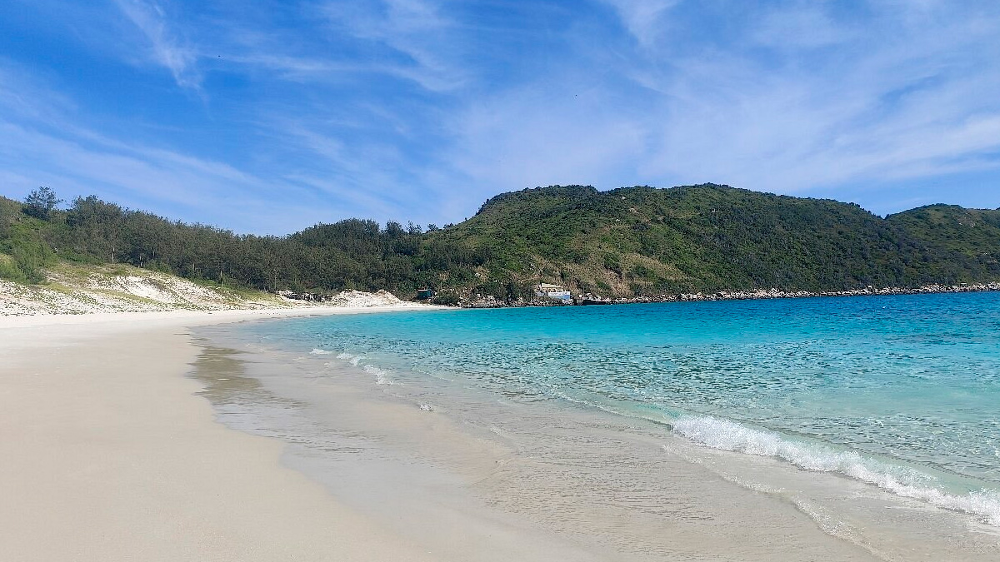

Descobrindo as Praias do Nordeste
Publicado em :
O Nordeste brasileiro é um destino obrigatório para quem ama sol e mar. Com uma extensão litorânea privilegiada, a região oferece desde praias famosas, até outros lugares poucos conhecidos quase desertos, onde a beleza da natureza se mantém muito bem preservada.
Além de suas belezas naturais, sua cultura local, o artesanato e a gastronomia chaman a atenção, por ser rica em sabores marinhos tornam cada visita uma experiência única. Cidades como Maceió e Natal são pontos de partida perfeitos para explorar suas famosas piscinas naturais.
